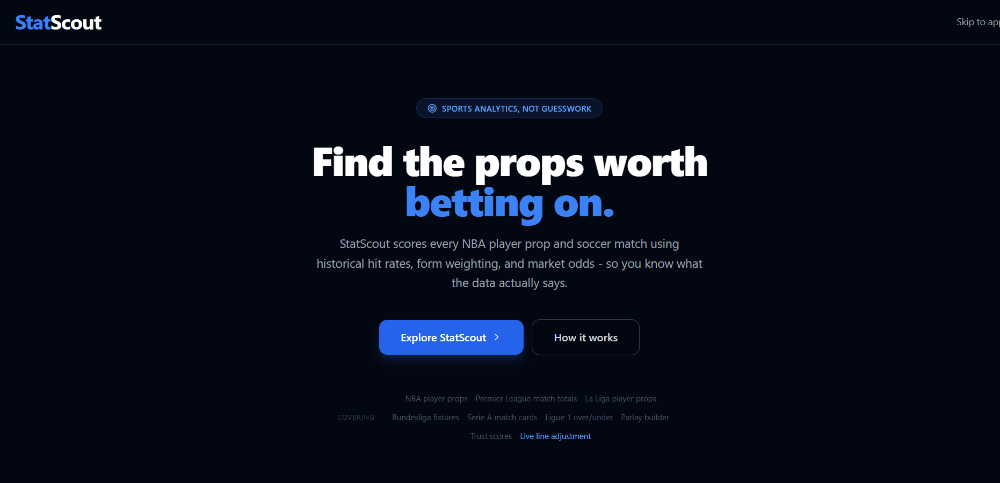
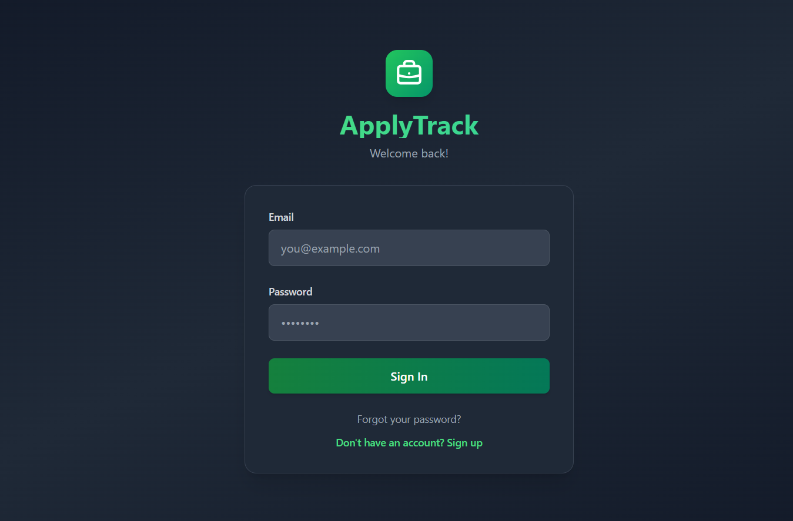

Hello, I'm
Sam Adu-Gyapong
Full Stack Developer
I'm a software engineering student graduating May 2026, passionate about full-stack web development and data-driven applications. I build deployed, production-ready systems using React, Flask, and PostgreSQL.

About Me
I'm pursuing a Bachelor's degree in Software Engineering at Miami University, with an expected graduation date of May 2026. My passion lies in building full-stack web applications that solve real-world problems, ranging from sports analytics platforms to job tracking tools and interactive multiplayer games. I care deeply about writing clean, maintainable code and designing user experiences that feel intuitive and polished. Throughout my academic career, I have taken courses in data structures, algorithms, software design, databases, and machine learning, giving me a strong theoretical foundation to go alongside my hands-on project work. I am most comfortable working in JavaScript and Python, and I have built and deployed multiple full-stack applications using React on the frontend and Flask on the backend. Every project I build gets deployed to the web, because I believe that shipping real, live products is what separates learning from actually doing. I am always pushing myself to learn new tools and frameworks, and I am currently deepening my skills in Next.js, WebSockets, and data engineering pipelines.
Outside of coding, I stay active by going to the gym regularly, which helps me maintain the focus and discipline that carries over into my work as a developer. I'm a big sports fan (especially basketball), which is actually what inspired me to build StatScout, my multi-sport analytics platform. I love exploring new music, which led me to create BuzzBeats, a real-time multiplayer music quiz game I built with a few friends. I enjoy hanging out with friends and having conversations about technology, entrepreneurship, and where the industry is headed. I believe the best developers are curious people who are genuinely interested in the problems they are solving, not just the code they are writing. I bring that mindset to every project: I always start by asking "what problem is this solving and for whom?" before writing a single line of code. My goal after graduation is to join a product-focused engineering team where I can continue growing as a developer and contribute to something meaningful.
Technical Skills
Languages
- JavaScript
- Python
- Java
- C++
- SQL
- HTML & CSS
Frameworks & Libraries
- React
- Next.js
- Flask
- Node.js
- Bootstrap
Tools & Platforms
- Git & GitHub
- PostgreSQL
- Supabase
- Vercel
- Render
- Vite
Education & Experience Overview
| Type | Title | Organization | Year |
|---|---|---|---|
| Education | B.S. Software Engineering | Miami University | 2022 – 2026 |
| Project | StatScout: Multi-Sport Analytics Platform | Personal | 2025 – Present |
| Project | ApplyTrack: Application Manager | Personal | 2024 |
| Project | BuzzBeats: Music Quiz Game | Team | 2025 |
| Capstone | Multi-Sensor Data Visualization Toolkit | Miami University | 2025 – 2026 |
Featured Projects

StatScout
Multi-sport analytics platform covering NBA props and soccer with real-time betting odds, hit rates, and trust scores.
See Details
ApplyTrack
Full-stack job application tracker featuring a Kanban board, dashboard analytics, and JWT-based user authentication.
See Details
BuzzBeats
Real-time multiplayer music quiz game with a host-player format, live scoring, and lobby system built with Next.js.
See Details